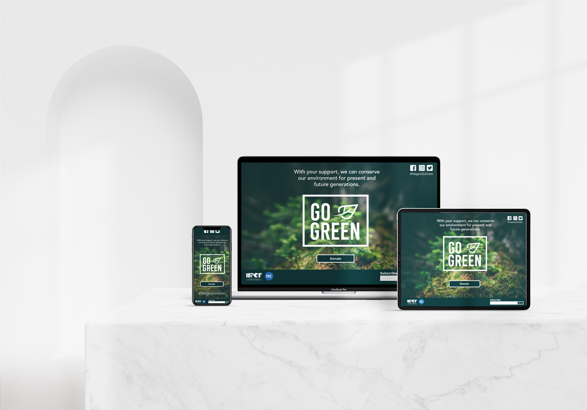
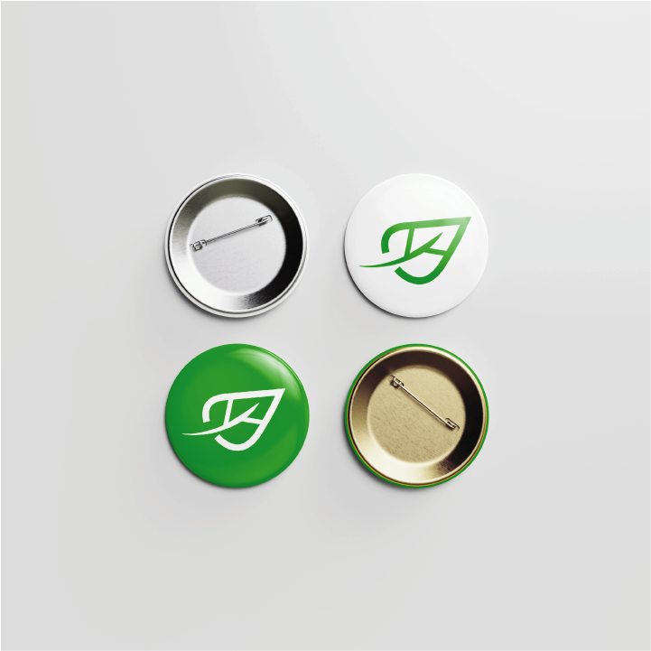
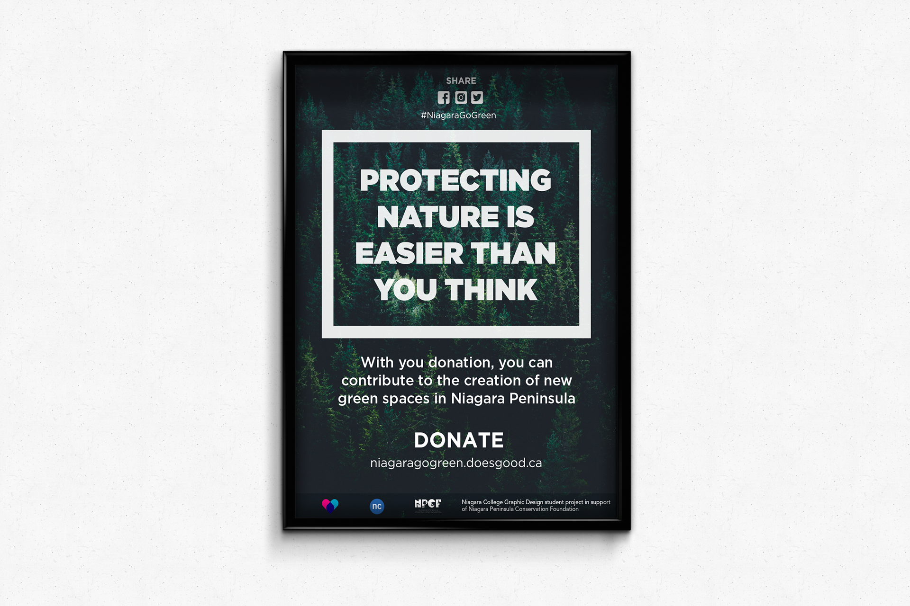
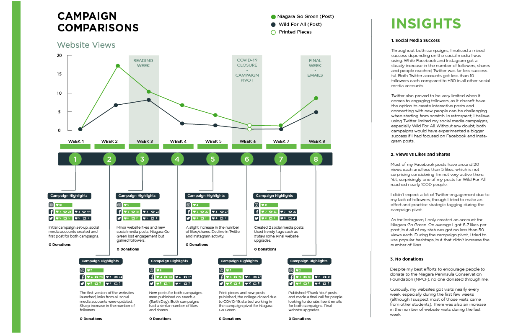

Project Objective
Niagara Go Green is the outcome of a collaboration between Niagara College and Niagara Peninsula Conservation Foundation (NPCF), a charity dedicated to the conservation of Niagara region green spaces. As a part of a campaign to raise funds for the cause, I was required to design a set of responsive websites with information about the charity and a link to donate via Go Fund Me.
Concept
The campaign uses nature imagery combined with text in all of its promotional pieces, so I wanted to keep the design consistent and opted to do a minimalistic website with a small forest in the background and the text, logo and button at the front. At the top and the bottom of the page, there are also extra links that redirect to the Niagara College, NPCF and social media pages.
 Outcome
The final outcome is a responsive website that adapts to any device and takes into account the audience, with a simple and intuitive layout while keeping a consistent style with the rest of the campaign promotional materials.
